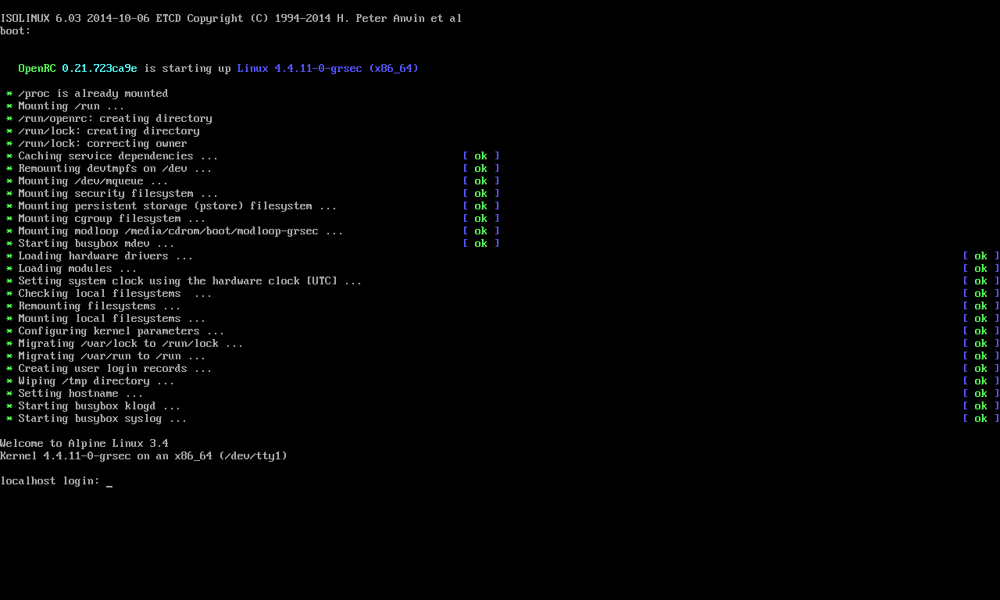
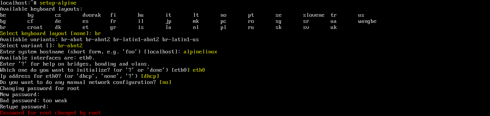
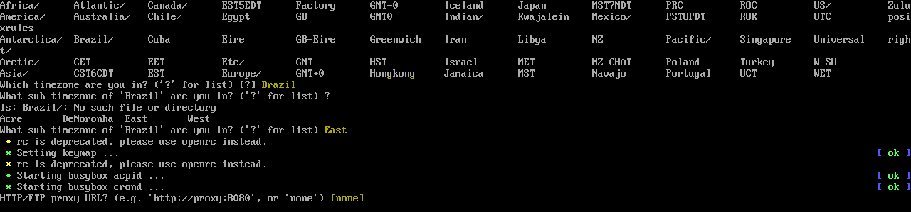
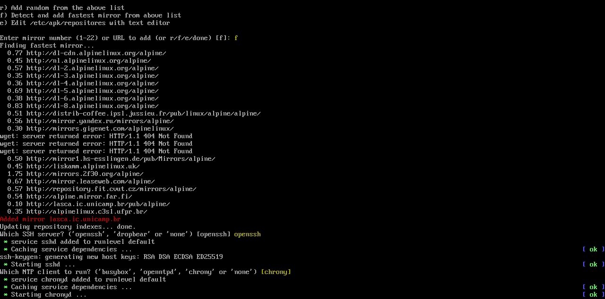
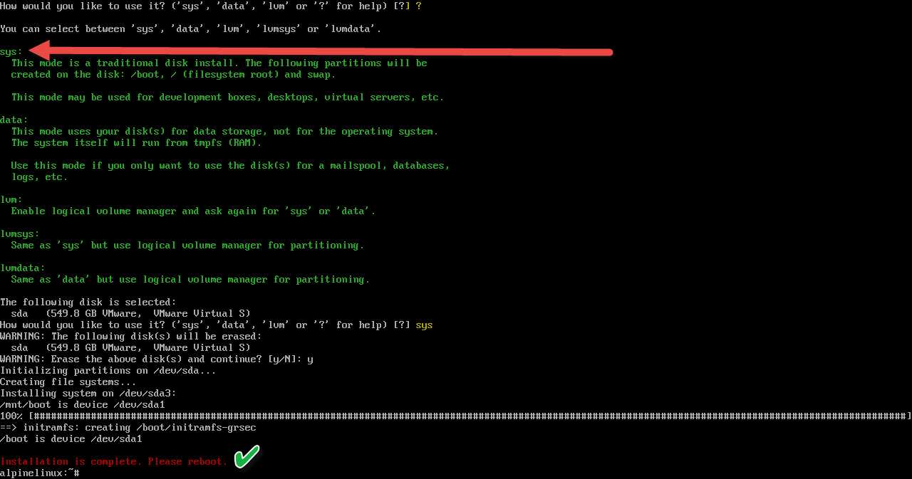
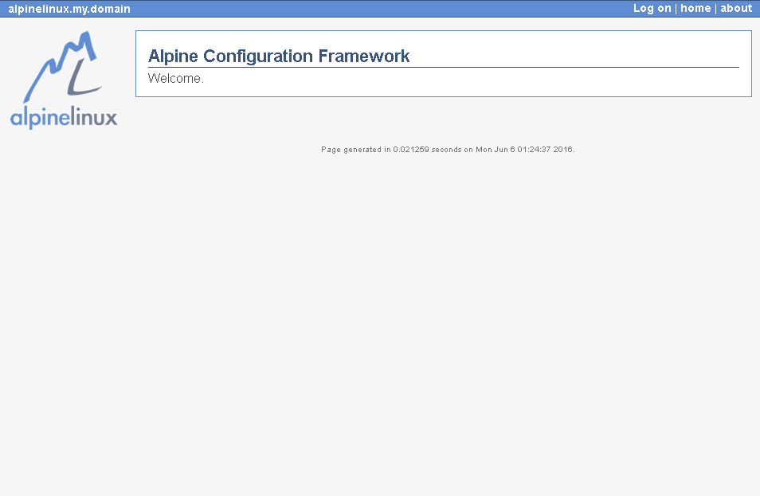
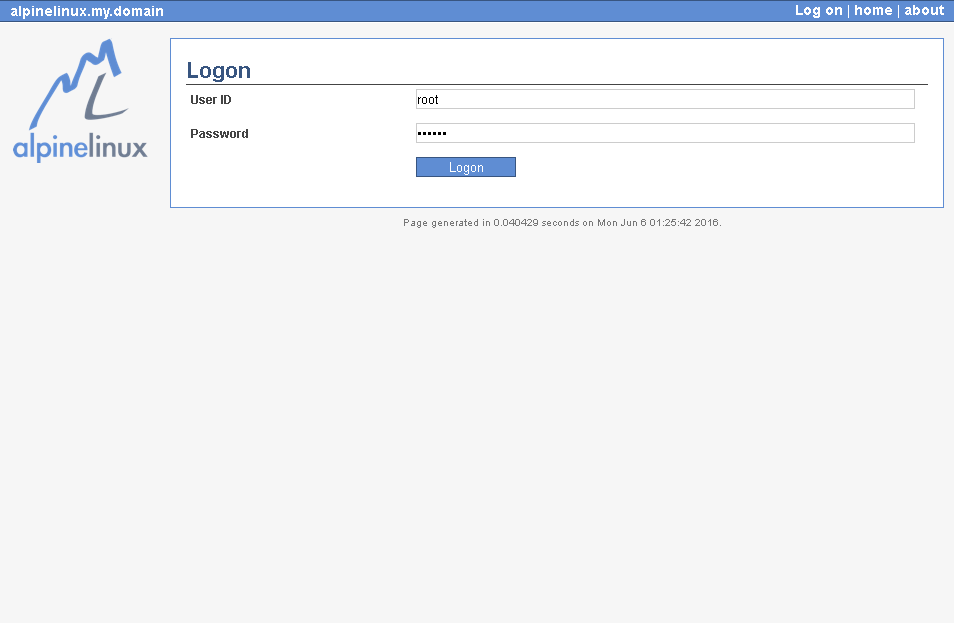
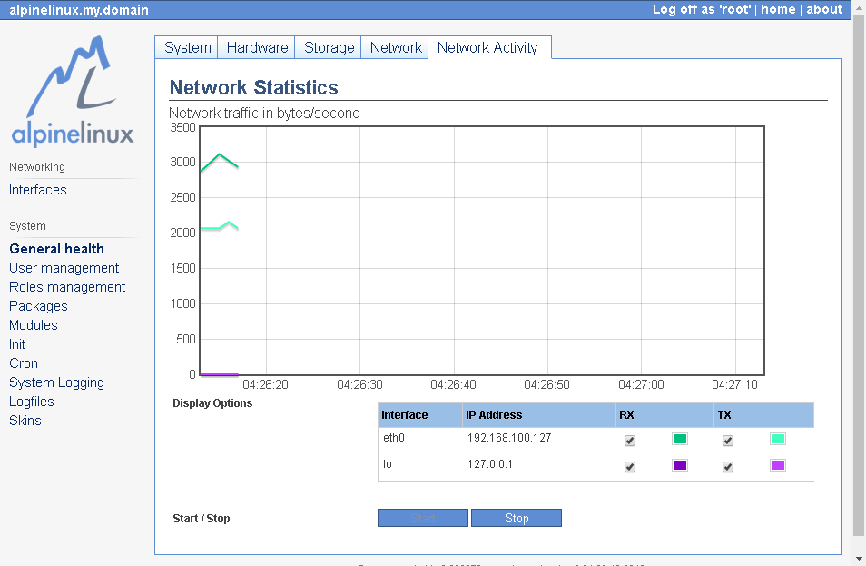

Alpine Linux - Uma nova distro linux ligth que vale a pena conhecer
BlogCompartilhe esse post nas redes sociais...
Olá Homelabers!
Essa semana por meio de uma galera do grupo Infraestrutura TI no Telegram conheci uma nova distro Linux super levinha chamada Alpine Linux (http://www.alpinelinux.org/).
O download do Alpine Linux tem apenas 87MB em sua versão Standard. E em meus testes, consegui rodar em uma VM com 128MB de memória.
Estou testando o Alpine Linux e gostando muito. A curva de aprendizagem para quem está acostumado com outras distros como Ubuntu, CentOS, RedHat é bastante curta e a documentação existente no site é bem completa.
Vale comentar que ainda existem versões para Raspberry Pi e outros dispositivos ARM. Essa distro promete!
E ao que parece, o Alpine Linux vem chamando a atenção nos últimos tempos, de acordo com o Google Trends.
Eu já fiz um post aqui sobre Distros Ligths e o Alpine Linux certamente merece um lugar de destaque nessa categoria.
Acabei fazendo um video com a instalação e as primeiras configurações do Alpine, assim facilita para o pessoal.
[embed]https://youtu.be/qiGnjQ4mRns[/embed]
Instalação
A instalação do Alpine Linux é feita em 3 simples passos:
1. Fazer o download do ISO em [http://www.alpinelinux.org/downloads/](http://www.alpinelinux.org/downloads/) Para simplificar, use a versão Standard.
2. Crie um pendrive de boot usando o [Rufus](http://homelaber.com.br/criando-ubs-boot-vmware-exsi-com-rufus/) (instruções no link)
3. De o boot pelo pendrive, logue com o usuário "root" sem senha e pronto! Está feito!

Após a instalação, você deve executar o comando:
setup-alpine
Esse comando irá nos guiar através de um wizard bem simples (em modo texto)




Pós-Instalação
Trabalhando com pacotes no Alpine Linux (instalar, remover, atualizar, procurar, etc)
O gerenciador de pacotes utilizado pelo Alpine Linux é o apk
Abaixo está uma tabela com os comandos no Alpine Linux e seus correspondentes no Ubuntu/Debian e RHEL/CentOS
apk add [nome-do-pacote]
apt-get install [nome-do-pacote]
yum install [nome-do-pacote]
apk del [nome-do-pacote]
apt-get remove [nome-do-pacote]
yum remove [nome-do-pacote]
apk upgrade -U -a
apt-get update && apt-get upgrade
yum update && yum upgrade
apk search [string]
apt-get search [string]
yum search [string]
Como configurar hostname
As configurações do hostname estão localizadas no arquivo /etc/hostname
Para configurar o hostname de seu servidor, execute o comando :
setup-hostname
/etc/init.d/hostname --quiet restart
Como configurar interface de rede
As configurações de rede estão localizadas no arquivo /etc/network/interfaces
Para configurar a(s) interface(s) de rede de seu servidor, execute o comando:
setup-interfaces
/etc/init.d/networking --quiet start
Como configurar DNS
As configurações de DNS estão localizadas no arquivo /etc/resolv.conf
Para configurar o DNS em seu servidor, execute o comando:
setup-dns
Como configurar Timezone
Para configurar o Timezone de seu servidor, execute o comando:
setup-timezone
Como configurar o Proxy
Para configurar o Proxy de seu servidor, execute o comando:
setup-proxy
Os dados do proxy deve ser inseridos utilizando o formado: http://:, para excluir o proxy, execute o comando novamente e escolha_ [none]_.
Como acessar o console via SSH com o usuário root
Se você tentar acessar o console do servidor via SSH com o usuário root, não vai conseguir, pois o sshd vem por default configurado para bloquear acessos do usuário root, por motivos de segurança.
Para contornar esse problema, você deve ou criar um novo usuário ou alterar o parâmetro “PermitRootLogin” para yes dentro do arquivo /etc/ssh/sshd_config e em seguida reiniciar o servidor sshd utilizand o comando service sshd restart
Como instalar acf (Alpine Configuration Framework)
O Alpine ACF é uma “aplicação” web para gerenciamento e monitoração do Alpine. E a seus instalação é feita com o comando:
setup-acf
Após a instalação, basta acessar o ip ou url do seu servidor (com https).
https://



Onde está o comando man?
O comando man não é instalado por padrão. Primeiramente, execute o comando abaixo para instalar o pacote do man:
apk add man
O próximo passo é instalar o pacote de documentação do pacote ou comando desejado, executando o comando:
apk add <package-doc>
ex: apk add nano-doc
Mas atenção, nem todos os pacotes tem disponível o pacote do manual. Para uma lista de todos os pacotes “-doc” execute o comando:
apk search | grep doc | more
(se você tiver uma sugestão melhor, deixe um comentário no post!)
Repositório de Pacotes
O repositório de pacotes está localizado no arquivo /etc/apk/repositories
Instalando Java 8 no Alpine Linux
Para instalar o Java 8 no Alpine Linux, execute os comandos abaixo:
apk add openjdk8-jre-base --update-cache --repository http://dl-3.alpinelinux.org/alpine/edge/testing/ --allow-untrusted \ && rm -rf /var/cache/apk/*
Se você precisar instalar o Java da Oracle, aqui e aqui são bons lugares para encontrar ajuda.
Links:
Não deixe de visitar esses links sobre o Alpine Linux:
Alpine Linux no Wikipedia
Twitter - @alpinelinux
Review no Distrowatch (em Inglês)
É isso ai pessoal! Mais um post e video publicado!
Deixe os seus comentários e até a próxima!
VC
Compartilhe esse post nas redes sociais...Valdecir Carvalho
Nerd e pai orgulhoso da Mariana e João. Profissional Sênior de TI com foco em arquitetura de infraestrutura e cloud computing. Blogueiro, podcaster, palestrante, amante de comunidades técnicas, fotógrafo aposentado e adora jogos antigos.
#vExpert · #VMUGLeader · #VUGBrasil · #vBronwBagBrasil · #VeeamVanguard